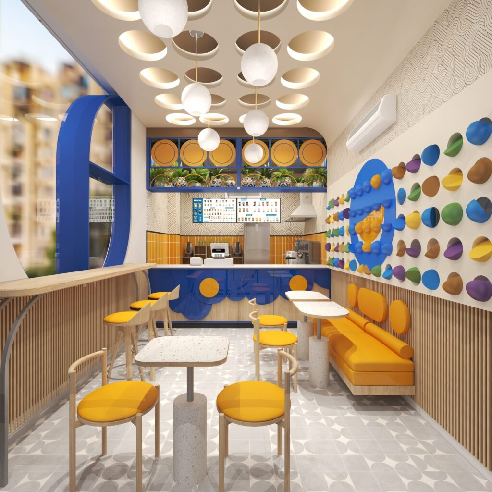
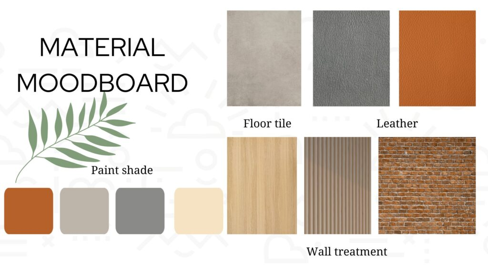

Do not choose a restaurant designer from a “Top 10” list. Build your own shortlist with evidence. Search results can tell you which companies are visible. They cannot tell you which company fits your project.
A new restaurant owner needs to compare capabilities, scope, process and commercial fit. The right design partner for a 250 sq. ft. QSR rollout may be very different from the right team for a one-off premium bar. This guide gives you a practical framework to compare firms without relying on self-awarded rankings.
Download the Restaurant Designer Comparison Scorecard
Excel scorecard with the 12 questions, the scope matrix and a weighted scoring sheet for up to three firms.
The 12 questions to ask every shortlisted company
1. How much of your work is F&B?
Look for depth in restaurants, cafés, bars, QSRs, bakeries or hospitality rather than a portfolio dominated by homes and offices.
2. Have you worked on my format?
Ask for relevant examples by size, service model and operational complexity, not only by visual style.
3. Who plans the kitchen/BOH relationship?
The designer should understand the interface between kitchen, wash, storage, service, staff and customer circulation.
4. Who owns MEP coordination?
Clarify electrical, HVAC, exhaust, plumbing, drainage and fire/landlord interfaces early.
5. Can you support branding?
For a new concept, coordinated identity, signage, menus, graphics and spatial design can reduce fragmentation.
6. What technical drawings are included?
Ask for a deliverable schedule. Concept renders alone are not enough to execute a restaurant reliably.

7. How is budget checked during design?
Find out when pricing, BOQ or value engineering enters the process and who owns cost decisions.
8. What happens after design approval?
Clarify contractor coordination, RFIs, shop drawings, sample reviews, site visits and snagging.
9. How do you plan the project timeline?
Look for stage gates and dependencies rather than a single opening date with no assumptions.
10. Can you support rollout?
For scalable concepts, ask how the first site becomes a repeatable standard without forcing identical plans everywhere.
11. Who will actually work on my project?
Meet the lead designer/project coordinator, not only the business-development team.
12. What is excluded?
A clear exclusion list is a sign of a mature proposal. Hidden gaps are more dangerous than a higher transparent fee.
Compare proposals apples to apples
Create one scope matrix and ask every shortlisted firm to mark Included, Optional, By Others or Excluded. This immediately exposes why one quotation is cheaper than another.
| Scope item | Compare this explicitly |
|---|---|
| Site survey / feasibility | Number of visits, measured drawings, existing services review |
| Concept design | Number of routes, moodboards, layouts, revisions |
| 3D visualisation | Number of views and revision rounds |
| Branding | Naming, identity, packaging, menus, signage, graphics |
| Working drawings | Architectural, joinery, reflected ceiling, finishes, details |
| MEP | Design vs coordination only; consultant responsibility |
| BOQ / cost | Quantity take-off, costing, tender comparison, value engineering |
| Site support | Calls, visits, sample review, RFIs, snagging |
| Build | Contracting, modular build, procurement, installation |
| Rollout | Standards, prototype learning, multi-site adaptation |
A simple weighted scorecard for a new restaurant owner
Use a 1–5 score for each criterion. Adjust the weights to suit your format. A first-time founder may weight handholding and integrated coordination more heavily; an established chain may prioritise rollout systems and cost repeatability.
| Evaluation criterion | Suggested weight |
|---|---|
| F&B specialisation | 15% |
| Operational / layout planning | 15% |
| MEP + kitchen coordination | 15% |
| Technical documentation | 10% |
| Relevant portfolio | 10% |
| Cost / value-engineering approach | 10% |
| Build / execution coordination | 10% |
| Brand integration | 5% |
| Rollout capability | 5% |
| Team + communication | 5% |
Download the scorecard to score up to three firms with these weights calculated for you.
What a strong restaurant design company should be able to explain in the first meeting
- How your menu affects the kitchen and services
- How your service model affects counter and seating logic
- Where queues, delivery riders and waiting customers go
- What site information is needed before design is frozen
- Which technical risks could affect budget or timeline
- Which design moments matter most to the brand
- What can be standardised if you open a second outlet

How SprintCo can be evaluated using the same framework
SprintCo’s website positions the company as a full-stack F&B design-and-build studio, combining concept design, brand identity, rollout, MEP and FlatPack build support (see Our Offerings). Its live portfolio includes restaurants, cafés, bars and QSR projects across multiple Indian cities.
That does not remove the need to compare scope. Use the same scorecard on SprintCo that you use on every other firm. The purpose of this page is to help owners make a better appointment decision, not to manufacture a ranking.
Frequently Asked Questions
Which is the best restaurant interior design company in India?
“Best” depends on the project. Compare relevant F&B portfolio, planning capability, MEP coordination, technical scope, build support, budget method, team strength and rollout experience rather than relying on a generic ranking.
How do I shortlist restaurant interior designers?
Start with firms that show relevant F&B work. Then compare 3–5 serious candidates using one scope matrix and the same questions.
What is more important: portfolio or process?
Both. Portfolio proves experience; process tells you how your project will be managed. A strong portfolio with a vague scope can still create execution problems.
Should I hire separate design, MEP and branding agencies?
You can, but coordination becomes a project responsibility. An integrated team can reduce handoffs, provided each capability is genuinely included and managed.
What should a restaurant designer scorecard include?
At minimum: F&B specialisation, layout/operations, MEP, technical drawings, budget process, build coordination, brand integration, relevant portfolio, rollout and communication.
Comparing design partners right now?
Send SprintCo the same brief you are sharing with other firms. Ask for a scope response, then compare it using the scorecard in this guide.
Related Reading
- How to Choose a Restaurant Interior Design Company: The companion hiring guide
- Restaurant Design & Build Company in India: SprintCo’s core design and build service
- Our Offerings: Scope across design, branding, MEP and FlatPack build
- Projects: Portfolio evidence across restaurants, cafés, bars and QSRs